Building a Sustainable 2030
The 2030 Agenda for Sustainable Development, adopted by all United Nations Member States in 2015, provides a shared blueprint for peace and prosperity for people and the planet (UN, 2015).
Why UNs SDGs Guidance Matters
The world faces interconnected challenges ranging from climate change to systemic inequality. The SDGs act as a universal framework to address these "wicked problems" simultaneously. By providing clear targets, the guidance ensures that development in one area does not compromise sustainability in another, fostering a global partnership that leaves no one behind (Global Goals, 2023).
The Mission
"End poverty, protect the planet and ensure that all people enjoy peace and prosperity by 2030."
The 17 Goals to Transform Our World
Official UN Website →Introduction to the SDGs
Learn about the "world's best plan" for a better future. This UN video outlines the 17 goals designed to transform our world by 2030.
Our Collaborative Team
Four perspectives, one vision for a sustainable future.
Zhou Tiantian
周添添
Background: Studying at Liaoning University and Victoria University, majoring in international business.
Aspiration: I aim to work in international urban economic investment, participate in overseas urban construction business, and promote sustainable commercial development of overseas communities.
Wu Yutong
吴雨桐
Background: I study international business as my main subject across Liaoning University and Victoria University.
Aspiration: I plan to develop in the field of international green trade, promote global low-carbon business exchanges, and help enterprises carry out climate-friendly overseas trade business.
Wu Shuaiqi
吴帅琪
Background: I am currently pursuing my international business degree at both Liaoning University and Victoria University.
Aspiration: I hope to engage in international energy business cooperation in the future, promote cross-border trade of clean energy products, and boost green energy economic development worldwide.
Wang Kexian
王轲娴
Background: My academic major is international business, and I study jointly at Liaoning University and Victoria University.
Aspiration: I want to be engaged in cross-border marine economic trade, standardize international fishery business, and realize eco-friendly marine commercial development.
National Impact Research
Individual reports on goal adversity and rectification strategies.
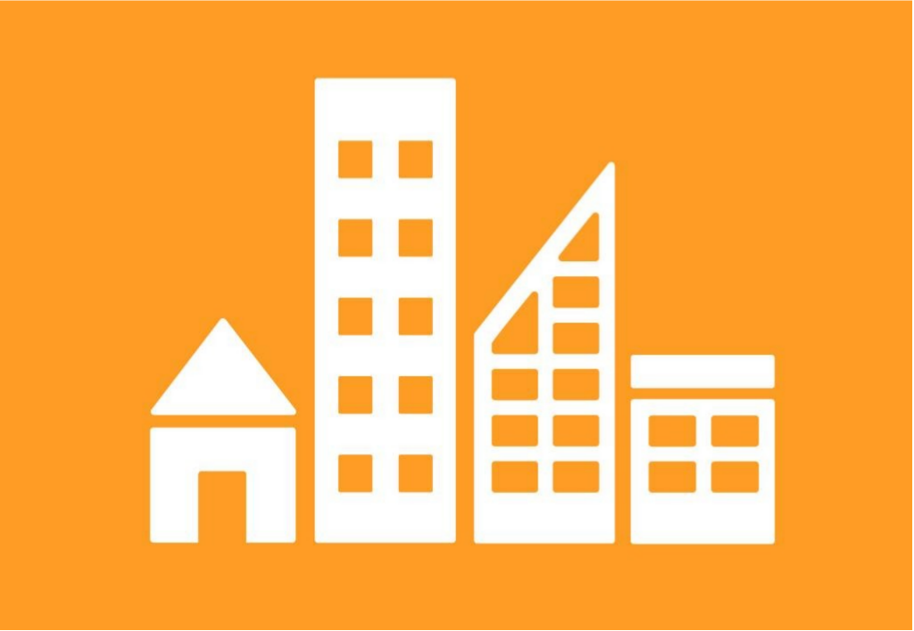
SDG 11: Sustainable Cities & Communities
The Purpose
of SDG 11
Sustainable Development Goal 11 aims to make cities and human settlements inclusive, safe, resilient and sustainable. It directly focuses on disaster risk reduction, sustainable transport, and creating safe human settlements.
Kenya
Currently facing critical unsustainable urban development challenges, characterized by rapid demographic growth and infrastructure lag.
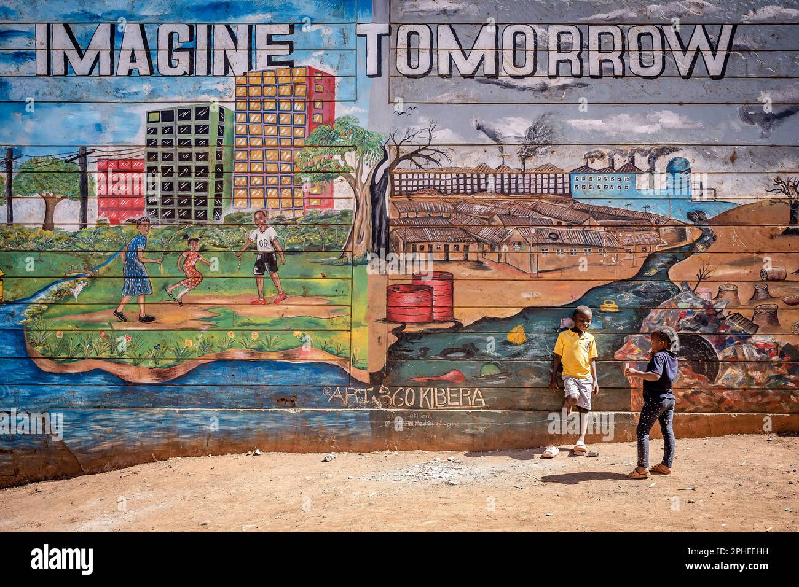
Adverse Impact Analysis
Kenya suffers from serious unsustainable urban development problems. In major cities, large-scale slums are constantly expanding, trapped in overcrowding, dilapidated housing, and highly insufficient living space. This phenomenon of informal slum settlements has become extremely common across urban areas.
Figure 1: Levels & Rates of Urbanisation (1948-2035)
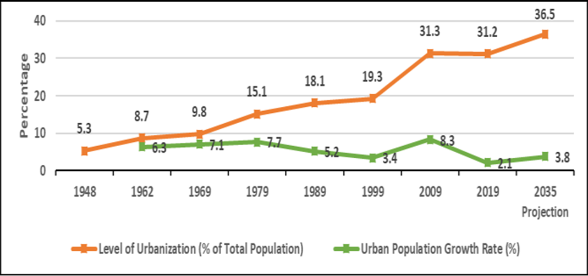
Source: 2019 KPHC Analytical Report Vol. IX; World Cities Report, 2022
Root Causes
01. Rural-to-Urban Migration Limited rural employment opportunities have led to a massive migration of people to Kenya's cities. The large influx of migrants puts pressure on urban systems, while local authorities, with limited funding and planning capacity, struggle to cope with population growth.
— UNDP, 2023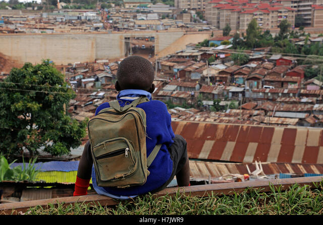
02. Velocity Imbalance The growth of urban population far outpaces the development speed of housing, infrastructure and public services. Regional economic inequality has driven more low-income groups to flock to cities, resulting in a severe imbalance between supply and demand.
— NCPD, 2025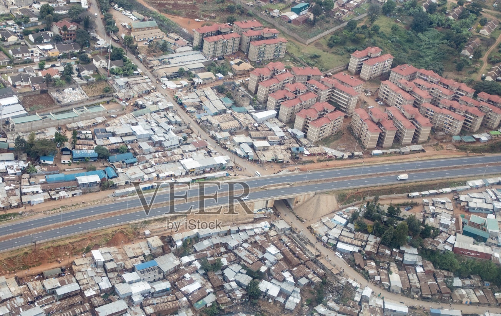
03. Capacity & Regulation Deficit Urban planning and land management have failed to keep pace with the rapid population growth. Inadequate supervision has led to the emergence of numerous disorderly residential areas and the uncontrolled expansion of informal housing.
— UNDP, 2023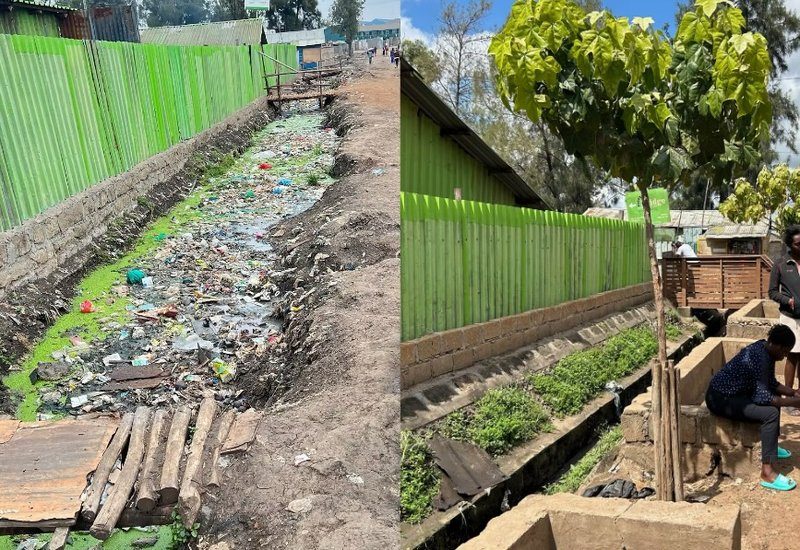
04. Disorderly Layout The lack of unified planning in urban layout has led to the disorderly presence of illegal buildings; insufficient investment in infrastructure fails to meet the needs of residents, resulting in slums, chaotic traffic and poor urban living conditions.
— UNDP, 2023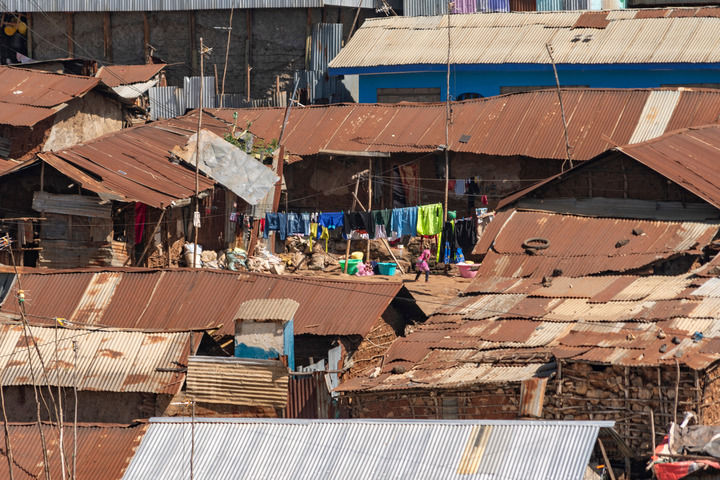
Improvement Measures & Strategy
Scientific Planning & In-situ Upgrades
Formulate a scientific and unified overall urban planning to renovate chaotic slums and build affordable, compliant housing. Emphasize no forced demolition; existing structures will be preserved while focusing on low-cost essential upgrades to surrounding infrastructure.
Diversified External Funding
To counter local funding shortages, avoid relying solely on government finance. Actively absorb international public welfare funds, overseas development assistance (ODA), and foreign capital to expand the public transport network and relieve traffic pressure.
Environmental Management & Resilience
Establish a standardized system for waste classification and disposal to strengthen environmental hygiene and maintain cleanliness. Concurrently, upgrade urban disaster prevention and emergency infrastructure to enhance the city's coping capacity against natural disasters.
Coordinated Rural-Urban Development
Coordinate urban-rural development patterns to alleviate the current stress of excessive populations flocking to big cities. Actively promote balanced economic growth and infrastructure construction in small towns.
Field Photography: Kenyan Urban Textures
Visual documentation of local human settlements and infrastructure constraints.
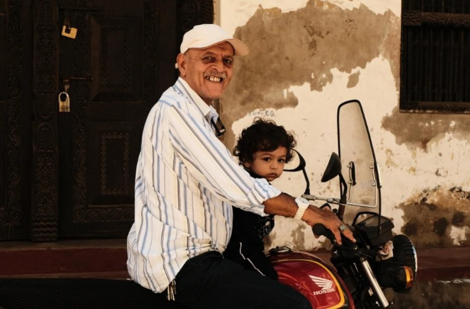
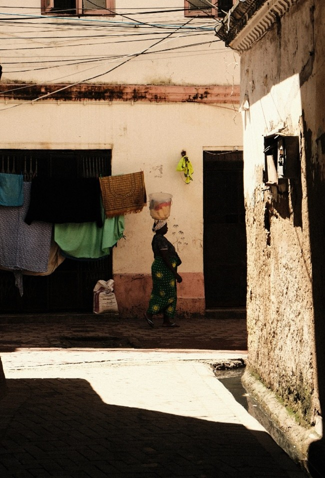
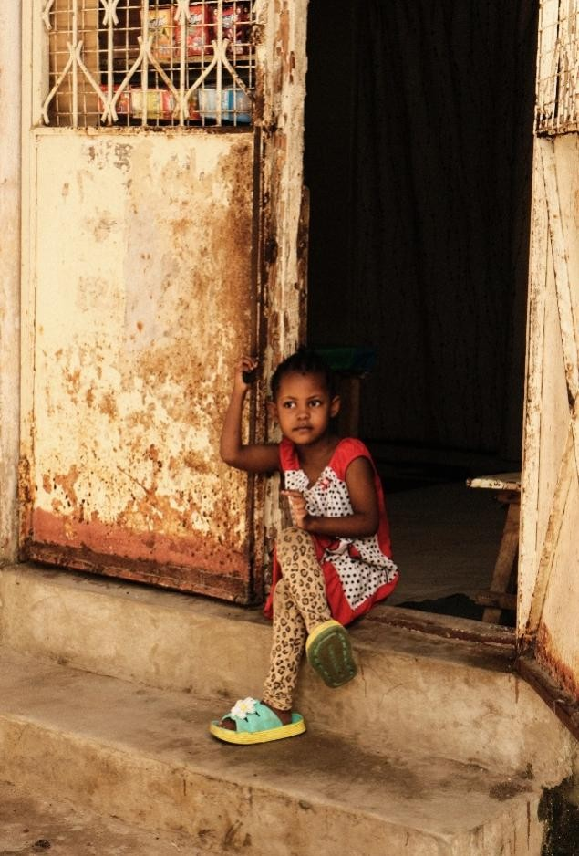
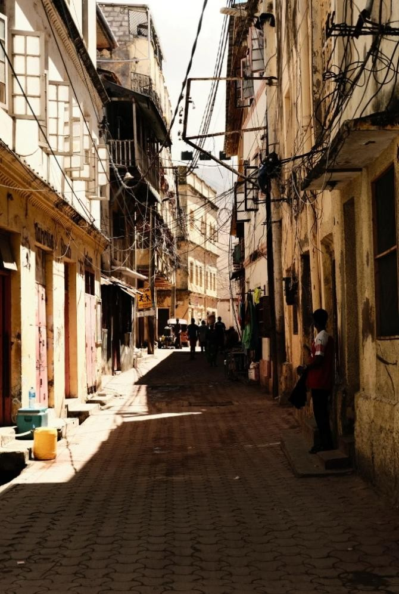
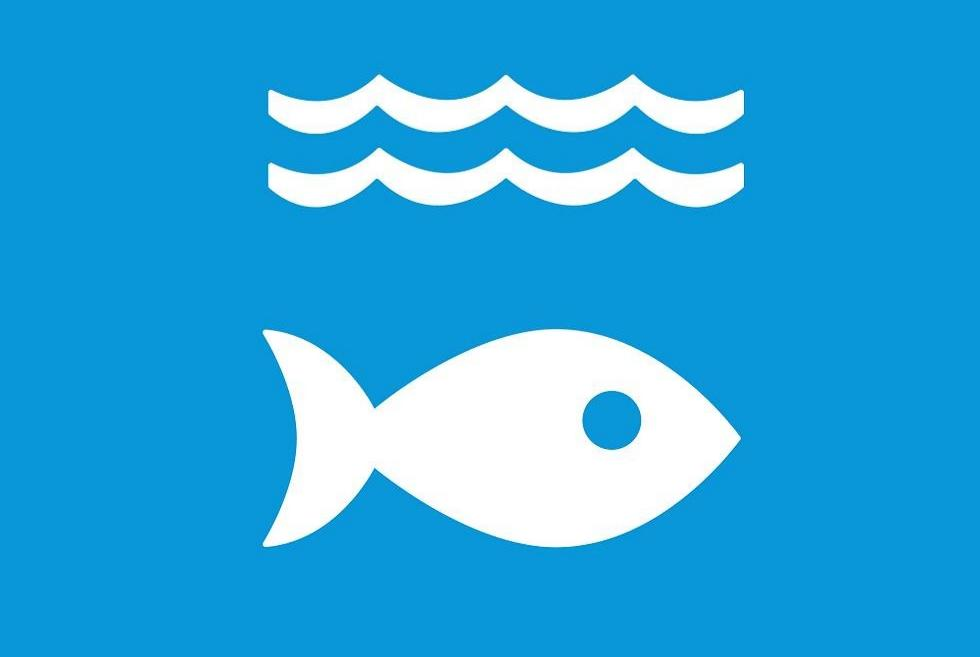
SDG 14: Life Below Water
The Purpose
of SDG 14
Sustainable Development Goal 14 aims to conserve and sustainably use the oceans, seas, and marine resources for sustainable development.
Moreover, it directly addresses marine pollution, overfishing, ocean acidification, protection of marine and coastal ecosystems, and support for small-scale fishers.
The Philippines
Home to one of the world’s largest coral reef systems (approximately 27,000 km²), currently facing severe marine degradation and critical ecological pressure.

Adverse Impact Analysis
The Philippines suffers from critical threats to its coastal and marine environment. Coral reefs across the archipelago have experienced significant decline, leaving many surveyed areas in poor to fair condition. Overfishing, destructive fishing practices, and coastal habitat loss further jeopardize marine biodiversity and the livelihoods of millions dependent on fisheries and tourism.
Figure 1: Trends in Live Coral Cover in the Philippines (1980-2030 Projection)
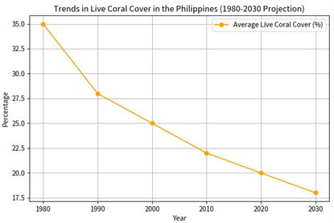
Source: Global Coral Reef Monitoring Network (GCRMN), 2020
Root Causes
01. Infrastructure Pressures Rapid population growth, intense urbanization, and severely lagging waste management infrastructure have led to massive land-based plastic pollution entering rivers and oceans, especially during peak typhoon seasons.
— Oruc Baci et al., 2026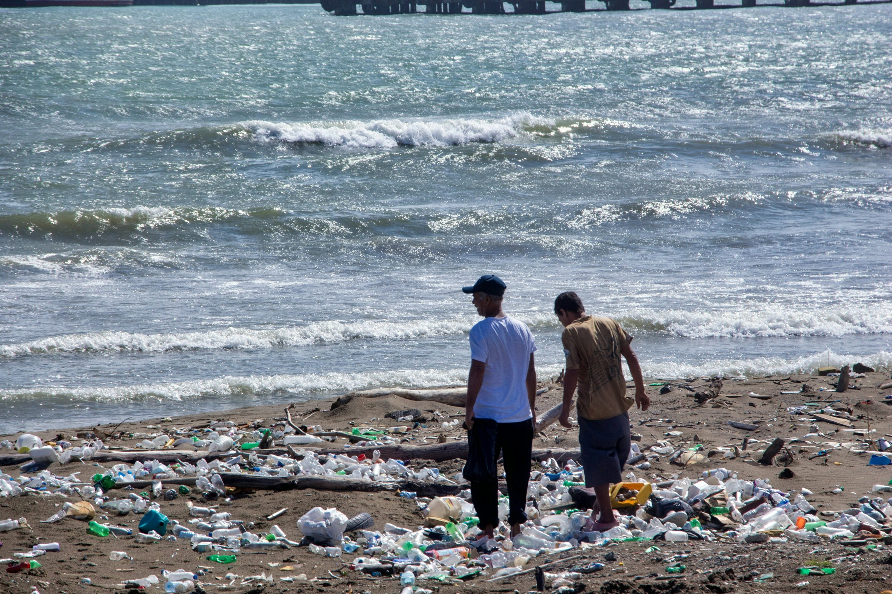
02. Poverty Causes Destruction Widespread coastal poverty paired with a high commercial demand for seafood drives overfishing and illegal practices like blast and cyanide fishing, which instantly shatter live coral structures.
— GCRMN, 2020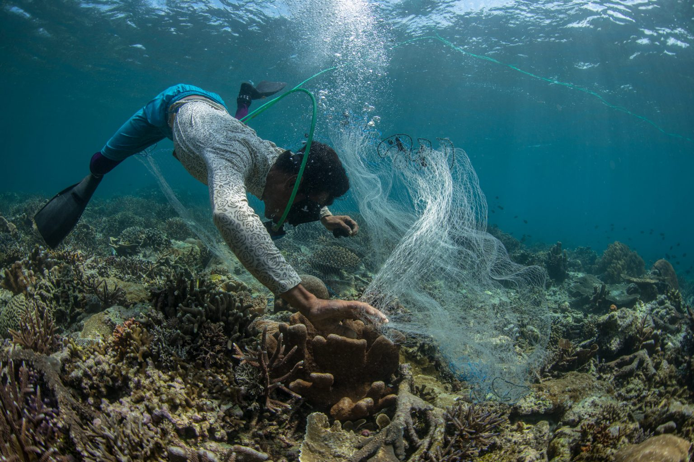
03. Anthropogenic Climate Stressors Global climate change-induced sea temperature spikes and worsening ocean acidification trigger widespread, repeated coral bleaching events, heavily diminishing regional live coral cover.
— GCRMN, 2020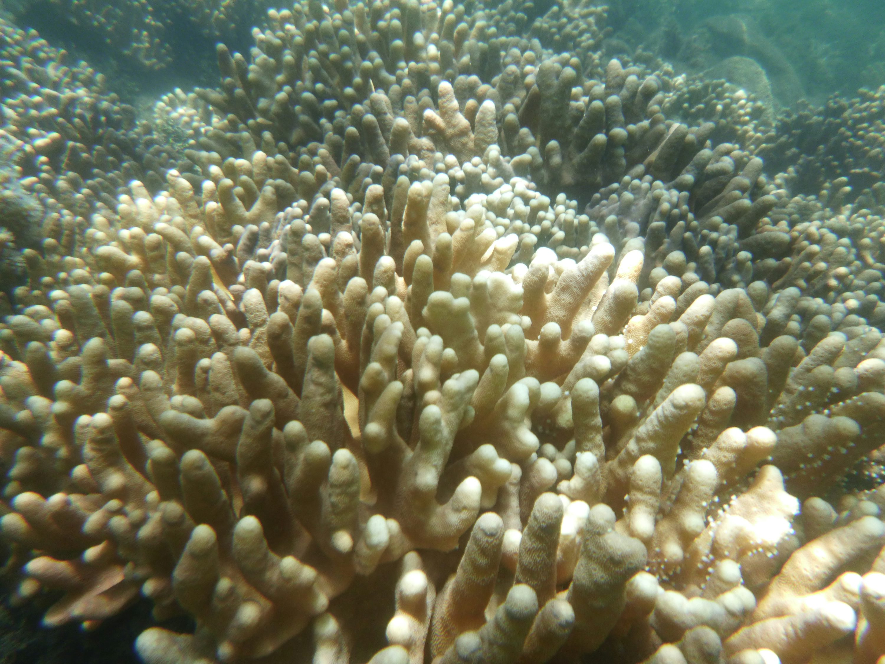
04. Governance & Regulation Deficit Weak enforcement of environmental laws, insufficient urban municipal planning, and destructive land-based activities (agricultural runoff, mining, and chaotic coastal development) result in extensive sedimentation and eutrophication.
— Dagum et al., 2024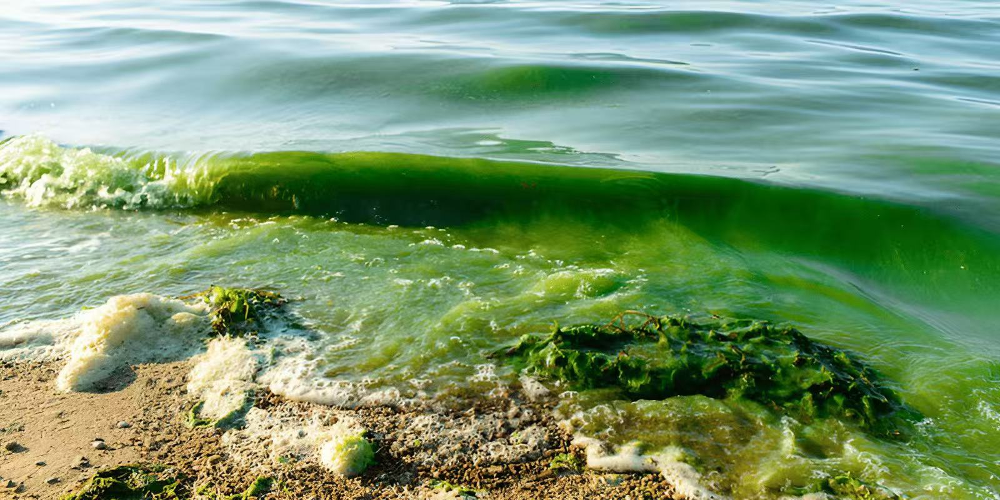
Improvement Measures & Strategy
Waste Management Upgrades
Strengthen national and local waste management systems by implementing strict “zero-sachet” policies, expanding community-based recycling initiatives, and investing heavily in modern waste treatment facilities within urban river catchments. A synchronized combination of infrastructure and behavioral change is essential.
Fisheries Enforcement & MPAs
Enhance enforcement of the regional Fisheries Code and scale up well-managed Marine Protected Areas (MPAs). Deploy advanced satellite monitoring and localized community patrols to systematically eliminate illegal, unreported, and unregulated (IUU) fishing. Mobilize international development assistance and blue bonds to fund operations.
Ecosystem Restoration & Resilient Strains
Launch large-scale coral reef restoration projects utilizing dedicated ocean nurseries and climate-resilient coral strains. Concurrently restore surrounding mangrove forests and seagrass beds to construct natural, high-resilience coastal protection barriers.
Alternative Livelihoods & Stewardship
Promote sustainable alternative livelihoods such as coastal ecotourism, seaweed farming, and certified sustainable fisheries to relieve wild stocks. Integrate ocean education into school curricula, strengthen inter-agency coordination, and foster public-private-civil society partnerships to secure long-term marine stewardship.
Field Photography: Philippine Marine Context
Visual documentation of beach cleanups, land-based plastic waste, and coral eco-structures.
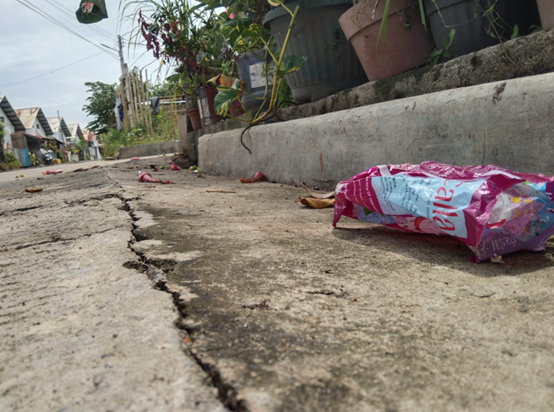
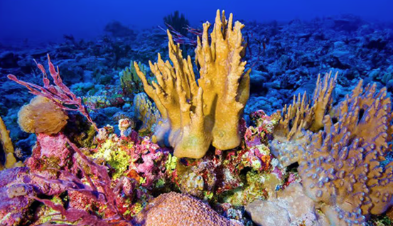
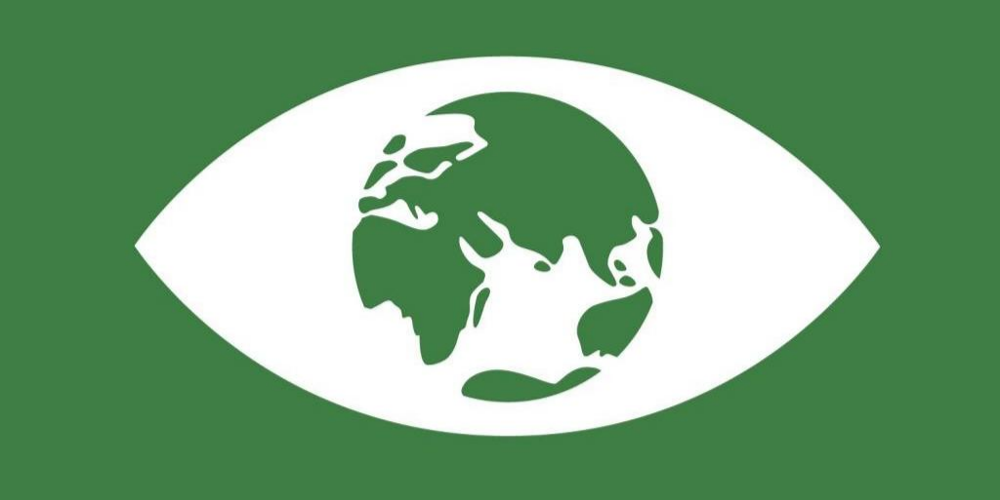
SDG 13: Climate Action
The Purpose
of SDG 13
Sustainable Development Goal 13 demands urgent, synchronized global action to combat climate change and its far-reaching ecological and socioeconomic impacts.
It strictly focuses on strengthening adaptive capacity, integrating climate measures into national policy, and improving education and institutional awareness.
Tuvalu
A low-lying Pacific reef atoll nation structurally highly vulnerable to rapid sea-level rise, ocean warming, and violent weather anomalies.
Adverse Impact Analysis
Tuvalu faces catastrophic existential threats driven by global anthropogenic emissions. The compounding effects of rising sea levels, high-velocity tropical cyclones, and extensive king tides have led to accelerated shoreline erosion and systemic saltwater intrusion into arable lands. This process rapidly contaminates critical underground freshwater lenses and shatters local subsistence agriculture.
Figure 1: Observed Sea-Level Rise at Funafuti, Tuvalu (1992–2020)
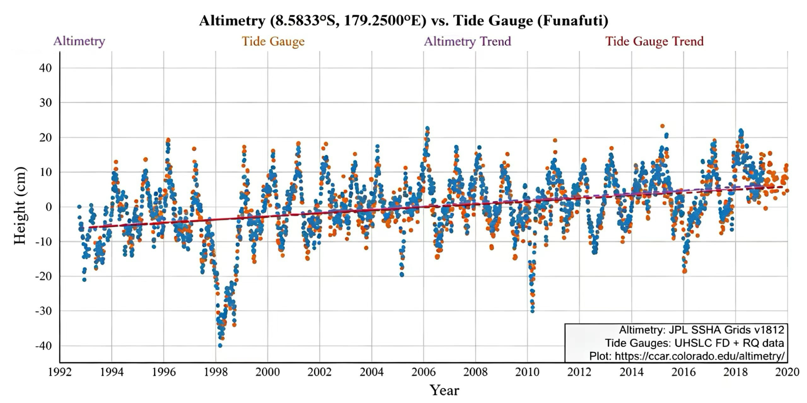
Source: University of Colorado CCAR Altimetry Project; UHSLC Tide Gauge Data, 2020; SPREP (2024)
Root Causes
01. Global Carbon Emission Unchecked industrial greenhouse gas emissions from major global economies accelerate global warming and thermal expansion of small island oceans, forcing localized sea levels upward.
— IPCC, 2021
02. Topographical Vulnerability The average elevation of Tuvalu’s atolls is less than 2-3 meters above sea level. This extreme structural plateau offers no natural geological barriers against high swells or ocean surges.
— SPREP, 2024
03. Thermal Inertia & Coral Decay Elevated ocean temperature anomalies trigger extensive marine bleaching, which systematically degrades the surrounding protective coral reefs, removing the island's primary shield against ocean wave energy.
— NOAA, 2025
04. Local Adaptation & Capital Deficit The municipal planning sectors suffer from severe domestic funding constraints, a lack of unified global climate finance distribution, and insufficient technological support to execute mega-scale land reclamation.
— UNDP, 2023
Improvement Measures & Strategy
Coastal Reclamation & Hard Engineering
Formulate a standardized, long-term engineering blueprint to build elevated sea walls and expand coastal land reclamation using dredged sand. Emphasize nature-based defenses; gray concrete structures must integrate with dense coastal vegetation to prevent sand erosion.
International Climate Sovereignty & Finance
To counter internal funding shortages, optimize international climate litigation and systematically absorb resources from the UN Green Climate Fund (GCF) and Overseas Development Assistance (ODA) to reinforce infrastructure resilience.
Freshwater Desalination & Biosafety
Establish localized, community-scale solar desalination networks to counter saltwater intrusion. Simultaneously expand advanced rainwater collection facilities and introduce salt-tolerant crop strains to stabilize agricultural health.
Digital Nation Sovereignty & Contingency
Coordinate regional relocation protocols and pioneer digital administrative mirroring projects (e.g., storing cultural identity in cloud servers) to safeguard legal statehood sovereignty against severe sea-level risks.
Field Photography: Tuvalu Atoll Vulnerability
Visual documentation of shoreline erosion, rising tides, and community resilience mechanisms.
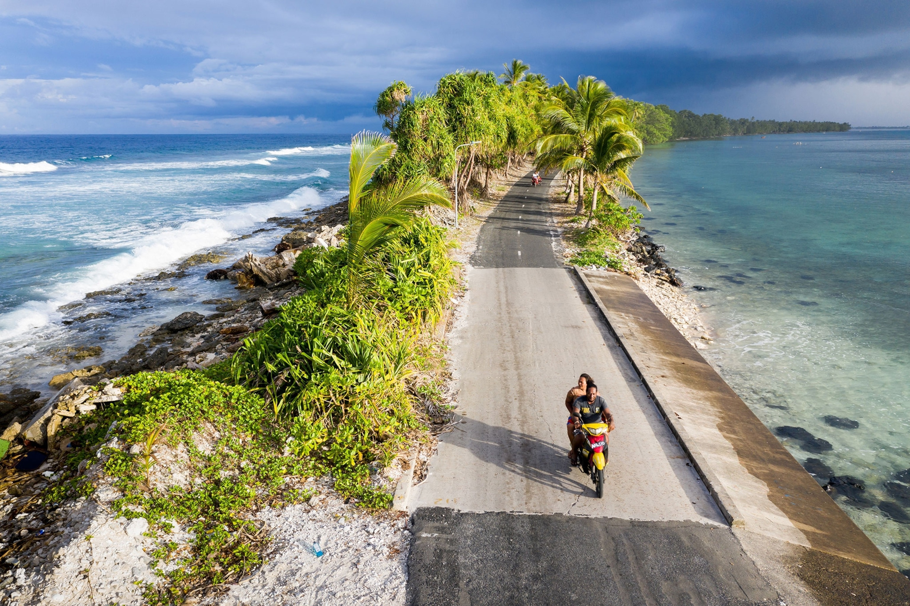
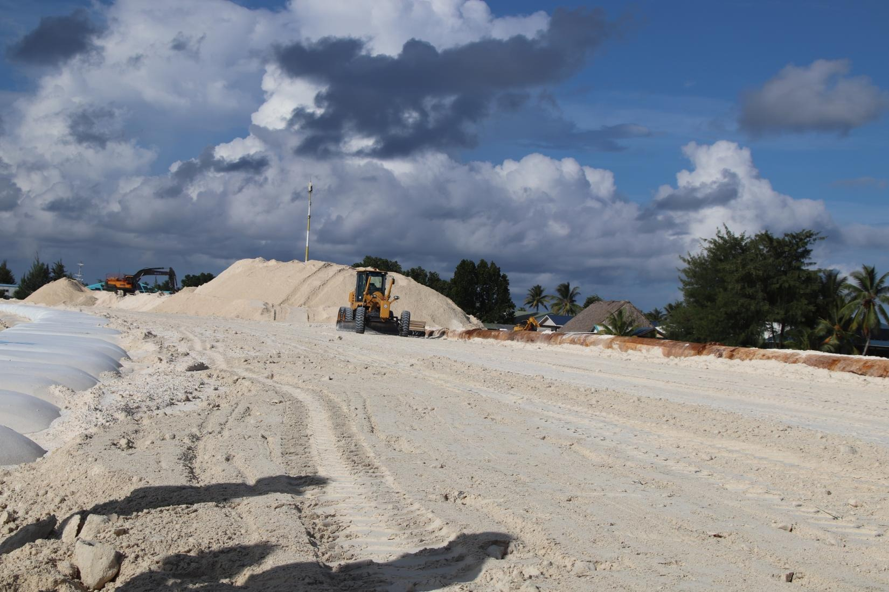
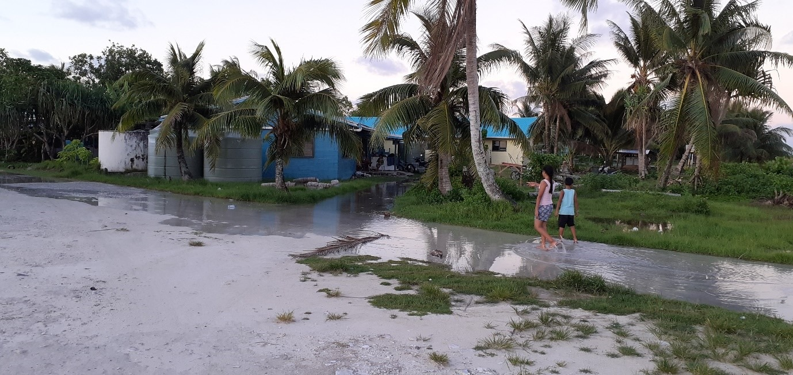
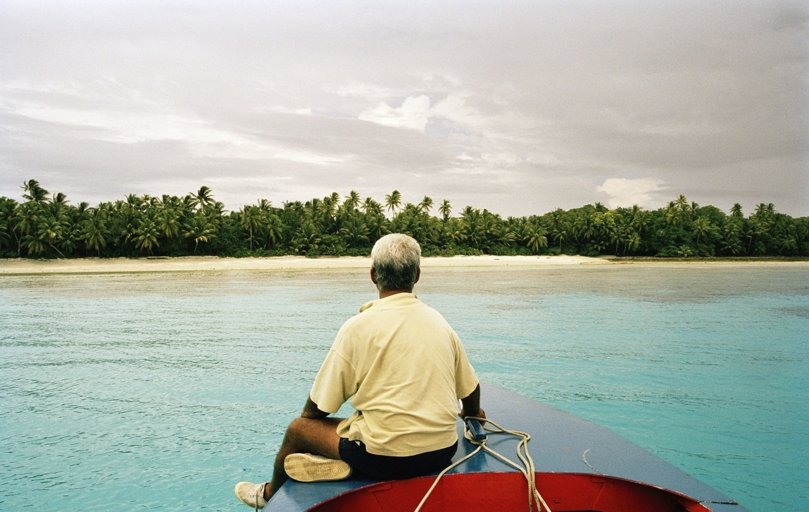
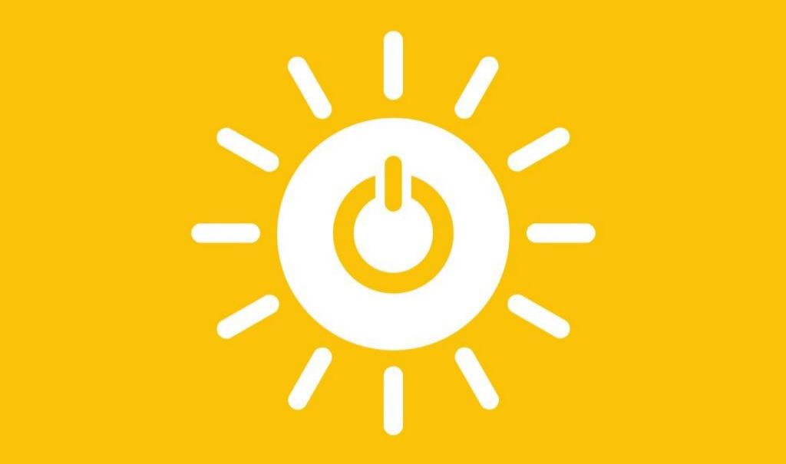
SDG 7: Affordable & Clean Energy
The Purpose
of SDG 7
Sustainable Development Goal 7 aims to ensure access to affordable, reliable, sustainable, and modern energy for all.
For South Africa, this goal is not just about environmental protection, but a critical foundation for national economic survival and social equity.
South Africa
Currently facing an acute, structural electricity supply crisis, tipping the national grid between cascading blackouts and urgent system modernization.
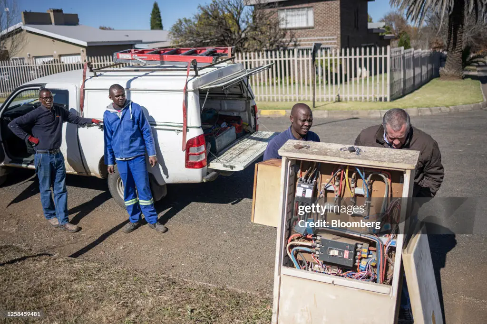
Adverse Impacts & Quantitative Analysis
South Africa's energy landscape has reached a critical tipping point. The nation's heavy reliance on an aging coal fleet has led to an exponential increase in destructive power outages, locally known as load shedding. These continuous blackouts have crippled the manufacturing and mining sectors, while frequent outages disrupt hospital operations and compromise public safety at night, disproportionately affecting vulnerable communities in informal settlements.
Figure 2: South Africa's Energy Fleet Performance & Generation Shares
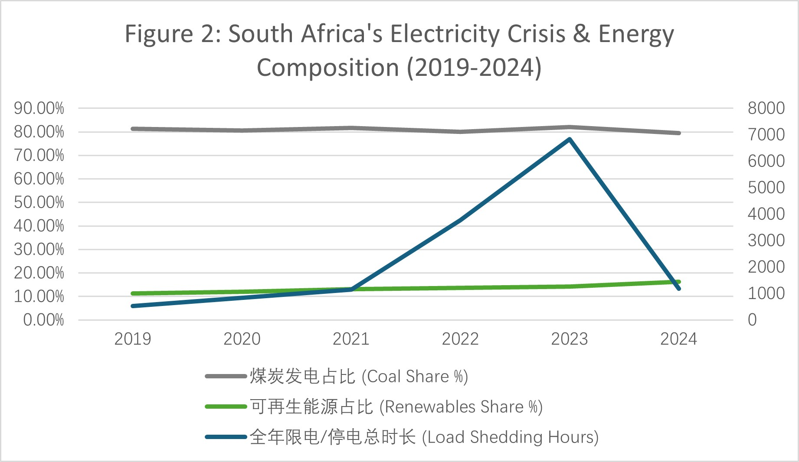
Source: CSIR Energy Centre & Stats SA (2025/2026)
Root Causes
01. Infrastructure Decay The Energy Availability Factor (EAF) of Eskom's coal fleet has plummeted from 70% in 2019 to below 55% in 2023, primarily driven by systemic lack of maintenance and embedded corruption.

02. Market Monopoly Deficit For decades, a single state-owned utility monopoly (Eskom) controlled the power landscape, heavily discouraging private investment in renewables and creating a vulnerable single point of failure.
— Eskom Market Review, 2025
03. The Severe "Coal Trap" Despite global decarbonization pressures, South Africa's vast domestic coal reserves—which still account for roughly 80% of total generation—have created an intensely rigid path-dependency.

04. Political & Labor Complexity Transitioning rapidly away from the traditional fossil framework directly threatens thousands of essential mining jobs, making the execution of a "Just Energy Transition" highly complex.

Personal Response & Strategic Improvement Measures
To move from "Adversity" to "Prosperity," South Africa must pivot from centralized coal to decentralized renewables:
Grid Modernization & Transmission Upgrades
The government must prioritize aggressively upgrading the physical transmission grid. Currently, many wind and solar projects in the clean energy-rich Northern Cape cannot connect to the national grid because the existing wires are operating at full capacity.
Empowering the Private Sector & Feed-in Tariffs
Capitalizing on the trend where renewable share successfully rose to 16.2%, the state should continuously remove restrictive licensing caps for private generators, allowing commercial businesses to seamlessly sell excess solar power back to the grid via optimized Feed-in Tariffs.
Targeted Social Subsidies (FBE Expansion)
To firmly guarantee that "No one is left behind," the Free Basic Electricity (FBE) quota must be systematically increased for registered indigent households to directly mitigate the severe socioeconomic impacts of rising utility tariffs.
The JET-IP Labor Retraining Framework
South Africa must transparently and efficiently utilize the $8.5 billion Just Energy Transition Partnership (JETP) funds to systematically retrain legacy coal miners for technical jobs within the emerging wind and solar industries, ensuring a socially fair transition.
Field Photography: South African Energy Context
Visual documentation of urban load shedding impacts, grid maintenance constraints, and the rapid deployment of rural and commercial solar structures.
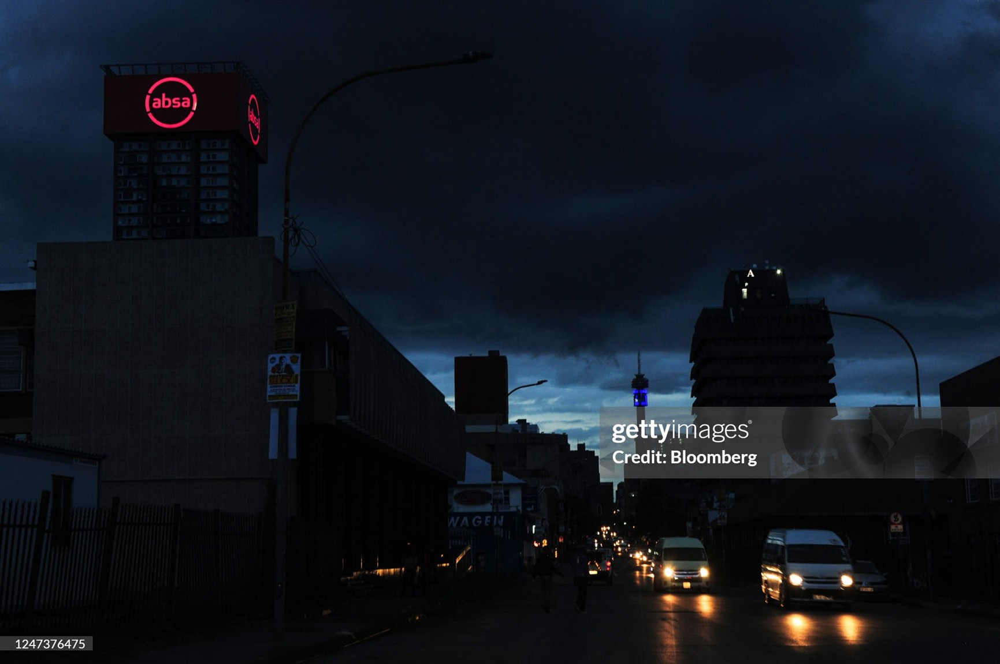
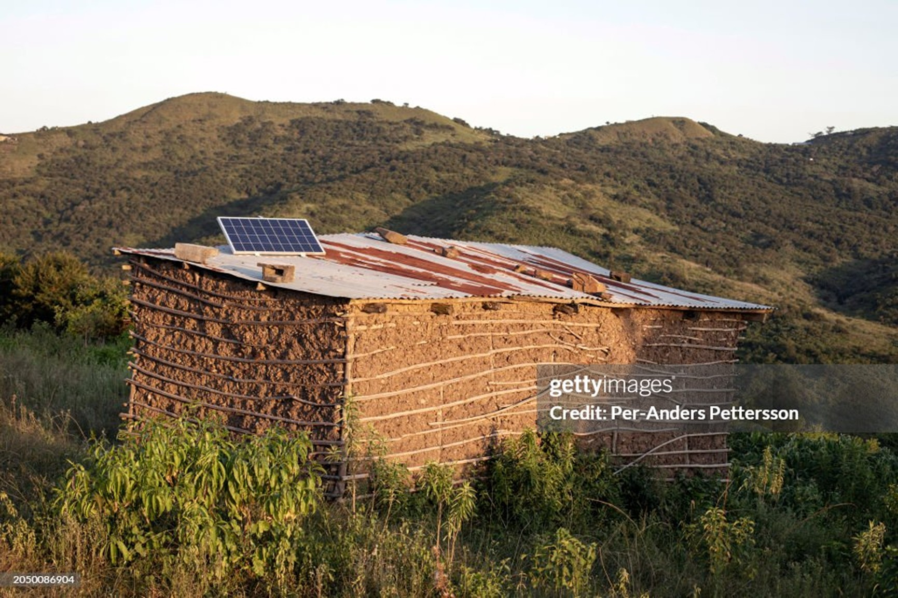
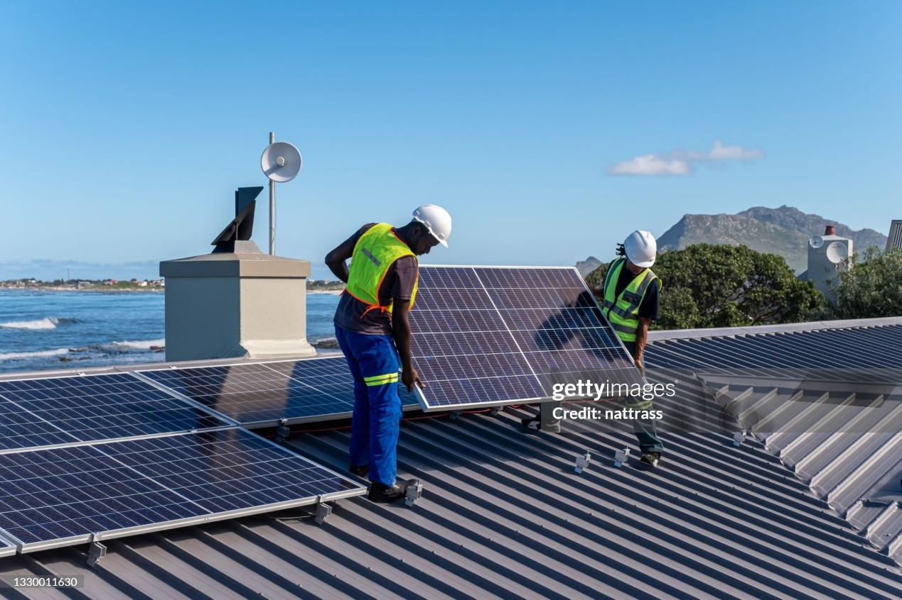
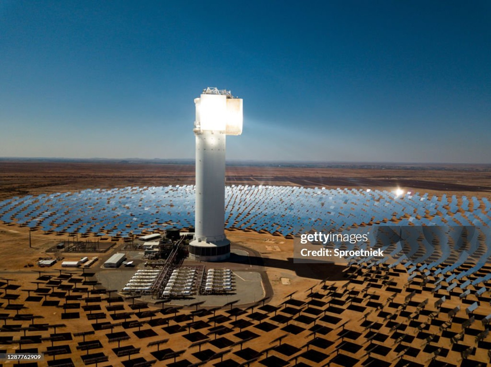
Act Now: Climate Action
Group Understanding: Carbon Footprint
The understanding of Carbon Footprint Carbon footprint refers to the total amount of carbon dioxide and other greenhouse gases emitted by humans, organizations or activities. It includes both direct emissions in daily life and indirect emissions during production, transportation and consumption processes. Carbon footprint is used to measure the extent to which human activities contribute to global warming.

Individual Action Reports
Wang Kexian (王轲娴)
Active PractitionerPracticing low-carbon lifestyle · Committed to long-term ecological balance
♻️ Core Action Framework: Reduce, Reuse, Repair, Recycle
“Although my current carbon footprint is relatively high, I will actively adopt a low-carbon lifestyle with my family, consciously practice the principles of ‘Reduce, Reuse, Repair, Recycle’, and strive to reduce carbon emissions in daily life. I am committed to gradually lowering my carbon footprint and contributing to environmental protection.”
📊 UN Carbon Footprint Calculator Input Evidence & Analysis
Data Source: UN Calculator
Private Annual Flights Frequency Distribution

4 persons / 100m² / Flat Base Input

Metro Transit / Walking Weekly Data Logs

Footprint Composition Analysis

Meat Preferred Diet / Full Stream Waste Sorting
The objective of “Reduce, reuse, repair, recycle”
The purpose of “Reduce, reuse, repair, recycle” is to minimize waste generation, extend the lifecycle of products, and promote a circular economy. This action reflects respect for natural resources and the value of human labor, while serving as an essential measure to reduce environmental pressure and address climate change in the context of limited planetary resources.
By practicing reduce, reuse, repair, and recycle, individuals and communities can significantly lower resource consumption, decrease landfill waste, and cut greenhouse gas emissions. This approach not only conserves raw materials and energy but also cultivates a sense of responsibility and sustainability, fostering a society that values long-term ecological balance over short-term convenience.
Reduce single-use plastics & packaging
Reducing disposable plastics, bags, bottles, and packaging decreases plastic pollution and production energy.
Reuse and repair before replacing
Extending product life through reuse and repair prevents unnecessary manufacturing and saves energy and raw materials.
Recycle and buy recycled products
Recycling turns waste into new products, saving energy and reducing virgin material demand. Sorting closes the material loop.
📸 Field Photography: Personal Low-Carbon Action & Evidence
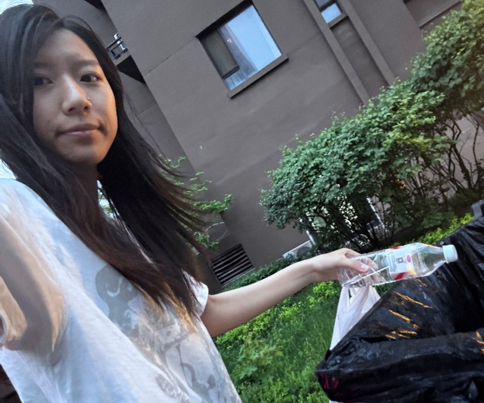
Garbage Separation
Classifying plastic bottles at recycling bin

Reusable Bags Action
Eliminating single-use plastic packaging

Circular Fashion
Vintage & sustainable clothing reuse

Eco Refill Station
Minimizing packaging waste at market
Zhou Tiantian (周添添)
Active PractitionerShifting household consumption patterns · Promoting value chain sustainability
💡 Core Action Framework: Make Your Money Count
“My annual household carbon footprint is about 21.17 tonnes of CO₂, so my annual carbon footprint is about 7.06 tonnes of CO₂, which is lower than the average carbon footprint of China. In that case, I will stick to this healthy and green lifestyle with my family and do my best to reduce carbon emissions in daily life.”
📊 UN Carbon Footprint Calculator Input Evidence & Analysis
Data Source: UN Calculator

3 persons / China / 160m² Semi-detached Unit

180 kWh/month Electricity / Natural Gas Base

Footprint Composition Analysis

Local Product Selections & Five-Stream Waste Sorting
The objective of "Make Your Money Count"
The carbon footprint of individual consumption is responsible for 64% of global greenhouse gas emissions (Oxfam, 2015). In addition, household consumption directly or indirectly accounts for approximately two-thirds of total emissions. Therefore, shifting pattern to a low-carbon mode is a key part of mitigating climate change (UNEP, 2020).
Old Clothes Donation
Sorting out clean and intact old clothes for public charity donation avoids resource waste and pollution caused by discarding clothes randomly. It enables items to serve a new purpose.
Environment-Friendly Goods
Give priority to low-carbon goods with environmental protection labels, and reduce excessive packaging. Conscious purchasing decisions directly lower emissions at the source.
Item Sharing & Exchange
Revitalize idle items by selling them off or choosing shared rentals, actively lowering emissions caused by new product manufacturing and extending resource lifecycles.
📸 Field Photography: Personal Low-Carbon Action & Evidence

Old Clothes Sorting & Donation
Redirecting apparel items to target public welfare projects

Public Donation Box Stations
Utilizing community pick-up and donation infrastructure hubs

Flea & Circular Exchange Markets
Liquidating idle assets to encourage resource extension cycles

Eco-Labeled Packaging Solutions
Filtering incoming goods based on sustainable labels
Wu Shuaiqi (吴帅琪)
Active PractitionerOptimizing residential efficiency · Advancing domestic demand-side mitigation
⚡ Core Action Framework: Home Energy Optimization & Phantom Load Management
“According to the UN Carbon Footprint Calculator, my annual carbon footprint is approximately 55.23 tonnes of CO2. Recognizing that my current carbon footprint places a demand on the planet's ecological capacity, I am committed to a proactive mitigation strategy. By integrating ‘Save energy at home’ into my daily routine, I aim to transform my living space into a model of energy efficiency.”
📊 UN Carbon Footprint Calculator Input Evidence & Analysis
Data Source: UN Calculator
Weekly Short-Range Private Flights Allocation Tracking

4 persons / China / 300m² Semi-detached Unit

bike & walk is preferred


Frequent Dining Out Profiling / Basic Waste Classification
The objective of “Save energy at home”
The primary objective of “Save energy at home” is to optimize residential energy efficiency and cultivate a sustainable consumption ethos. This action recognizes that domestic electricity demand is a significant driver of global carbon emissions, particularly in regions still dependent on fossil fuel power generation. By implementing strategic energy-saving measures, individuals can reduce their "energy intensity"—the amount of energy required to support their daily lifestyle—thereby mitigating the environmental degradation associated with resource extraction and greenhouse gas emissions.
Beyond immediate carbon reduction, this action aims to foster "energy literacy," empowering individuals to understand the systemic link between personal habits and global climate stability. In a world facing both energy security challenges and climate emergencies, saving energy at home serves as a practical, scalable, and high-impact contribution to the transition toward a low-carbon society. It aligns with the principles of responsible consumption and serves as a critical personal intervention.
Phantom Load Management
Eliminating structural standby "phantom load" across household appliances reduces total electricity waste.
LED Technology Transition
Replacing traditional incandescent bulbs with Light Emitting Diode (LED) technology is a high-impact technical intervention. LEDs consume up to 85% less energy and have a significantly longer lifespan compared to conventional lighting. This transition reduces the frequency of replacements and decreases the demand on the power grid. By optimizing my living space with LED technology, I am contributing to a cumulative reduction in $CO_2$ emissions and promoting a more sustainable approach to residential lighting (Santamouris & Paolini, 2023).
Strategic management of high-power appliances
Adopting eco-settings on intensive equipment and utilizing natural solar illumination alongside blind thermal regulation diminishes mechanical reliance.
📸 Field Photography: Personal Low-Carbon Action & Evidence

Active Power Management Controls
Monitoring residential zones to eliminate phantom loading trends
Residential Intensity Tracking
Leveraging diagnostic software metrics to maintain resource literacy

Demand-Side Mechanical Management
Activating eco-program profiles across heavy load operations

Technological Lighting Transitions
Installing high-impact LED variants to scale down draw bounds
Wu Yutong (吴雨桐)
Active PractitionerMinimizing residential organic waste · Advancing conscious consumer dietary systems
🍎 Core Action Framework: Throw Away Less Food
“According to my data assessment, food waste and carbon metrics are closely connected to residential consumption habits. Recognizing that uneaten food represents a massive waste of energy, land, and water resources, I am committed to a proactive zero-waste routine. By integrating careful meal planning and dynamic organic composting, I aim to significantly lower my footprint.”
📊 UN Carbon Footprint Calculator Input Evidence & Analysis
Data Source: UN Calculator
Weekly Short-Range Private Flights Allocation Tracking

3 persons / China / 150m² Semi-detached Unit

subway as the main transport


Frequent Dining Out Profiling / Basic Waste Classification
The objective of “Throw Away Less Food”
The purpose of this action is to reduce greenhouse gas emissions caused by food waste, particularly the methane released from the decomposition of food in landfills. Its goal is to enhance the efficiency of resource utilization, ensuring that food is fully utilized rather than discarded, which also helps to reduce the carbon footprint associated with food production, transportation and processing.
Conscious Purchase Planning
Formulating structured shopping logs prevents bulk over-purchasing of short shelf-life items. Prioritizing correct storage parameters limits systematic organic spoilage and optimizes municipal resource distribution.
Biomass Sorting
Isolating unavoidable organic elements from general dry refuse streams prevents anaerobic degradation inside landfills.
Circular Composting
Converting residual biomass via managed home composting cycles creates localized nutrient loops and significantly lowers emission output.
📸 Field Photography: Personal Low-Carbon Action & Evidence

Meal Portion Management
Planning strict domestic portions to eliminate excess leftovers

Aesthetic Longevity Storage
Using verified storage seals to maximize produce life cycles

Biomass Circular Composting
Diverting organic trimmings into active zero-waste compost units

Conscious Quantity Sourcing
Sourcing exact loose counts to prevent packaging and bulk waste
Reference List
- [1] Climate Action Tracker. (2026). South Africa country assessment: Just energy transition implementation and climate targets. https://climateactiontracker.org/countries/south-africa/
- [2] Climate Neutral Now. (n.d.). UN carbon footprint calculator. https://offset.climateneutralnow.org/footprintcalc
- [3] Council for Scientific and Industrial Research. (2025). Statistics of utility-scale power generation in South Africa 2024. CSIR Energy Centre. https://www.csir.co.za/
- [4] Dagum, L. J., Estrada, V., Amihan, H., Penaflor, E., Hilomen, A., Corpuz, F. J., Bambic, B., Licuanan, W., Soriano, M., & David, L. (2024). West Philippine Sea coral reef imagery using ARRAS technology. OCEANS 2024 - Halifax, 1–5. https://doi.org/10.1109/OCEANS55160.2024.10754536
- [5] D’Urzo, M., & Campagnaro, C. (2023). Design-led repair & reuse: An approach for an equitable, bottom-up, innovation-driven circular economy. Journal of Cleaner Production, 387, Article 135724. https://doi.org/10.1016/j.jclepro.2022.135724
- [6] Eskom Holdings SOC Ltd. (2024). Integrated report 2024: Mitigating grid instability and transitioning to renewable energy. https://www.eskom.co.za/
- [7] Global Coral Reef Monitoring Network. (2020). Status of coral reefs of the world: 2020. https://gcrmn.net/2020-report/
- [8] Global Goals. (2023). The 17 goals. https://www.globalgoals.org/goals/
- [9] Kenya National Bureau of Statistics. (2019). Kenya population and housing census: Analytical report on urbanisation (Vol. IX). The National Treasury and Planning, Republic of Kenya. https://africacheck.org/sites/default/files/media/documents/202208/Kenya%20Urbanisation%20Report%20-April%202022.pdf
- [10] National Council for Population and Development. (2025). Policy brief No. 10: Urbanization and access to essential services. https://ncpd.go.ke/wp-content/uploads/2026/02/Policy-Brief-on-Urbanization-Final.pdf
- [11] Organisation for Economic Co-operation and Development. (2025). OECD economic surveys: South Africa 2025. OECD Publishing. https://doi.org/10.1787/7e6a132a-en
- [12] Oruc Baci, N., Santiago-Collazo, F. L., & Jambeck, J. R. (2026). Evaluating macroplastics transport thresholds for overland flow processes. Journal of Hazardous Materials Advances, 22, Article 101200. https://doi.org/10.1016/j.hazadv.2026.101200
- [13] Oxfam. (2015). Extreme carbon inequality. https://www-cdn.oxfam.org/s3fs-public/file_attachments/mb-extreme-carbon-inequality-021215-en.pdf
- [14] Qiao, L., Tang, Y., Li, Y., Liu, M., Yuan, X., Wang, Q., & Ma, Q. (2022). Life cycle assessment of three typical recycled products from construction and demolition waste. Journal of Cleaner Production, 376, Article 134139. https://doi.org/10.1016/j.jclepro.2022.134139
- [15] Rappler. (2023, April 20). Philippines dominates global ocean plastic pollution chart. https://www.rappler.com/philippines/philippines-dominates-global-ocean-plastic-pollution-chart-at-36-shows-study/
- [16] Santamouris, M., & Paolini, R. (2023). Energy retrofitting of residential buildings: The impact of advanced lighting and thermal insulation on carbon reduction. Energy and Buildings, 281, Article 112756. https://doi.org/10.1016/j.enbuild.2022.112756
- [17] Shuma, M., Mbohwa, C., & Madanhire, I. (2022). Household energy efficiency awareness and behavior: A study on reducing phantom load in residential sectors. Procedia CIRP, 107, 1452–1457. https://doi.org/10.1016/j.procir.2022.05.173
- [18] South African Reserve Bank. (2024). Monetary policy review: The structural impact of energy constraints on national GDP. https://www.resbank.co.za/
- [19] Statistics South Africa. (2026). Electricity, gas and water supply industry (Report No. 41-01-02). https://www.statssa.gov.za/
- [20] Tanhayi, M., Chamani, A., & Mohammadi, S. (2026). Mindfulness promotes pro-environmental behaviors to reduce single-use plastic pollution. Scientific Reports, 16(1), Article 6868. https://doi.org/10.1038/s41598-026-36934-z
- [21] UN-Habitat. (2018). Country programme document for Kenya 2018–2021.
- [22] United Nations. (2015). Transforming our world: The 2030 Agenda for Sustainable Development. Department of Economic and Social Affairs.
- [23] United Nations. (2024). ActNow: Ten actions to help tackle the climate crisis.
- [24] United Nations. (n.d.). ActNow: Save energy at home. Climate Action. https://www.un.org/en/actnow/ten-actions#save-energy
- [25] United Nations. (n.d.). Goal 7: Ensure access to affordable, reliable, sustainable and modern energy for all. Department of Economic and Social Affairs. https://sdgs.un.org/goals/goal7
- [26] United Nations. (n.d.). Goal 11: Sustainable cities and communities. https://sdgs.un.org/goals/goal11
- [27] United Nations. (n.d.). Goal 14: Life below water. https://www.un.org/sustainabledevelopment/oceans/
- [28] United Nations Development Programme. (2023). Integrated SDG insights: Kenya. https://data.undp.org/sites/g/files/zskgke476/files/2023-11/undp_-_sdg_ken.pdf
- [29] United Nations Environment Programme. (2020). Emissions gap report 2020. https://www.unep.org/resources/emissions-gap-report-2020
- [30] Wits University. (2026, March 5). The social cost of load shedding: Energy poverty in informal settlements. Wits News. https://www.wits.ac.za/news/
- [31] World Bank. (2016). Improving living conditions for Kenya’s urban residents (Kenya Municipal Program).
- [32] World Bank. (2023). Carbon emissions per capita data.
- [33] WWF. (2024). Environmental footprint calculator.
References formatted according to APA 7th Edition standards.